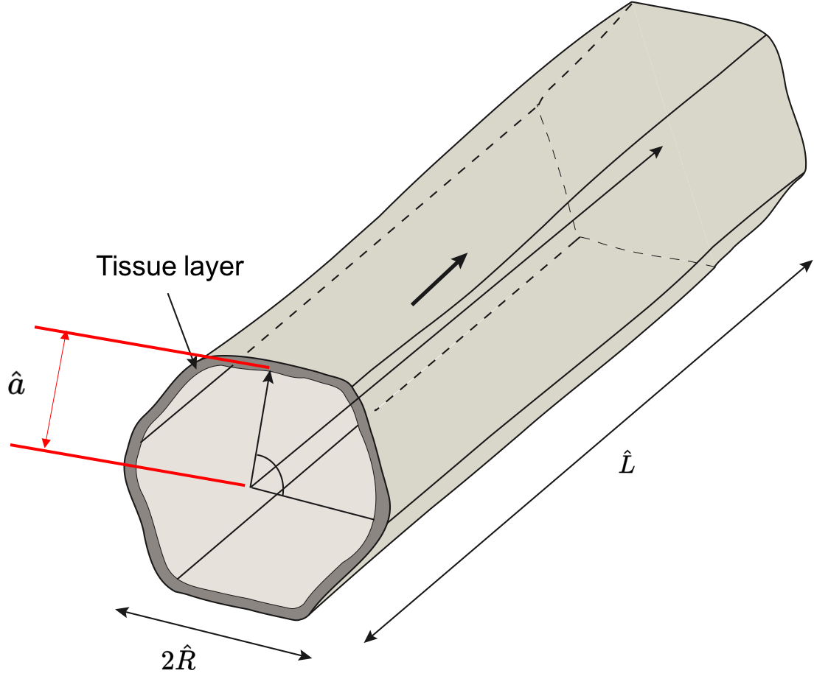
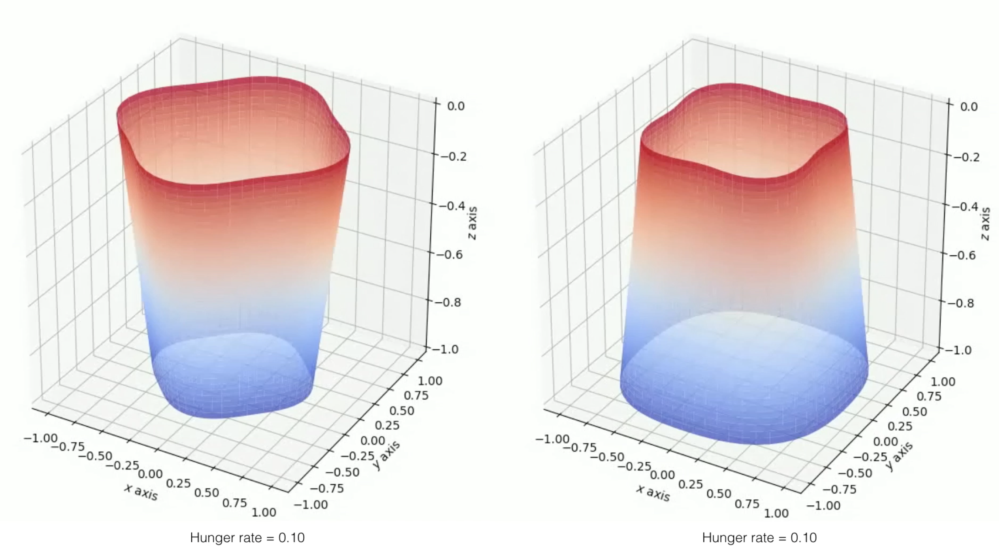

Curvature and Fluid Stress Driven Tissue Growth in a Tissue Engineering Scaffold Pore
| Cell proliferation within a fluid-filled porous tissue-engineering scaffold depends on a sensitive choice of pore geometry and flow rates: regions of high curvature encourage cell proliferation, while a critical flow rate is required to promote growth for certain cell types. When the flow rate is too slow the nutrient supply is limited; too fast and cells may be damaged by the high fluid shear stress. As a result, determining appropriate tissue-engineering-construct geometries and operating regimes poses a significant challenge that cannot be addressed by experimentation alone. In this work, we present a mathematical theory for the fluid flow within a pore of a tissue-engineering scaffold, which is coupled to the growth of cells on the pore walls. We exploit the slenderness of a pore that is typical in such a scenario, to derive a reduced model that enables a comprehensive analysis of the system to be performed. We derive analytical solutions in a particular case of a nearly piecewise constant growth law and compare these with numerical solutions of the reduced model. Qualitative comparisons of tissue morphologies predicted by our model, with those observed experimentally, are also made. We demonstrate how the simplified system may be used to make predictions on the design of a tissue-engineering scaffold and the appropriate operating regime that ensures a desired level of tissue growth. |  |
Effects of Nutrient Depletion on Tissue Growth in a Tissue-Engineering Scaffold Pore
| In a tissue-engineering scaffold pore lined with cells, nutrient-rich culture medium flows through the scaffold then cells proliferate. In this process, both environmental factors such as flow rate, shear stress, and the property of the cells have significant effects on tissue growth. In this work, we focus on the nutrient consumption rate of the cell. Nutrient consumption by the cells, causes a change in nutrient concentration of the flow and influences the growth of cells lined downstream. Moreover, with cells growing, the pore radius decreases and shear stress changes accordingly. In this work, our objectives are threefold: (i) design a mathematical model for the cell proliferation with PDEs describing fluid dynamics, nutrient concentration, and tissue growth; (ii) solve the PDEs, then simulate the tissue proliferation process; (iii) design a “reverse algorithm” to find out the initial configuration of the scaffold with the knowledge of the desired property of the final tissue geometry. Our model is capable of reducing the numerical burdens, as well as captures the experimental observations and provides an efficient algorithm to simulate the tissue proliferation process and determine the design of a tissue engineering scaffold given desired tissue model outcome. |  |